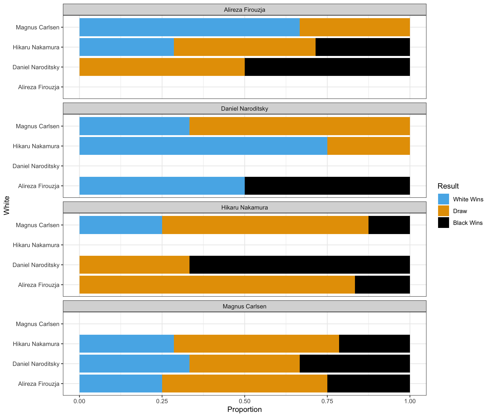

Summary for Midterm Exam 2 Performance
The following provides the descriptive statistics for each part of the Midterm Exam 2 questions:
The following describes the distribution of Midterm Exam 2 score:

Section 1. Multiple Choice, Short Answer, and Various Questions
Question 1
The quote “I would have written a shorter letter, but I did not have the time” by Blaise Pascal emphasizes the challenge of being:
- Detailed
- Accurate
- Concise
- Creative
Answer:
- Concise
Explanation:
Blaise Pascal’s quote underscores the difficulty of expressing ideas succinctly. Being concise often requires more thought and effort to distill complex ideas into clear, brief statements.
Question 2
When the distribution of a variable has a single peak and is negatively skewed (i.e., having a long left tail), which of the following is correct?
- Median < Mode < Mean
- Mean < Median < Mode
- Mode < Mean < Median
- Median = Mean = Mode
Answer:
- Mean < Median < Mode
Explanation:
In a negatively skewed distribution, the long tail is on the left side. The mean is pulled in the direction of the skew (left), so the mean is less than the median, which is less than the mode.

Question 3
What is NOT an essential component in ggplot() data visualization?
- Data frames
- Geometric objects
- Facets
- Aesthetic attributes
Answer:
- Facets
Explanation:
While facets are useful for creating multiple plots based on a factor, they are not essential components of a ggplot(). The essential components are data frames, geometric objects, and aesthetic attributes.
Question 4
____(1)____ does not necessarily imply ____(2)____
(1)Correlation;(2)causation(1)Causation;(2)correlation(1)Correlation;(2)correlation(1)Causation;(2)causation
Answer:
(1)Correlation;(2)causation
Explanation:
The phrase “correlation does not necessarily imply causation” means that just because two variables are correlated, it doesn’t mean one causes the other.
Question 5
In the context of the lecture, which of the following correctly interprets a change in log-transformed GDP per capita and its meaning for GDP per capita?
- A one-unit increase in log(GDP per capita) means to a 1% increase in GDP per capita.
- A one-unit increase in log(GDP per capita) means to a 100% increase in GDP per capita.
- A one-unit increase in GDP per capita means an 8.4% increase in GDP per capita.
- A one-unit increase in GDP per capita means a 0.084% increase in GDP per capita.
Answer:
- A one-unit increase in log(GDP per capita) means a 100% increase in GDP per capita.
Explanation:
Since the logarithm (usually natural log) of GDP per capita is being used, an increase of 1 unit in the log scale corresponds to a 100% (or doubling) increase in the original GDP per capita scale.
Questions 6-12
For Questions 6-12, consider the following R packages and the data.frame, nwsl_player_stats, containing individual player statistics for the National Women’s Soccer League (NWSL) in the 2022 season:
library(tidyverse)
library(skimr)
nwsl_player_stats <- read_csv("https://bcdanl.github.io/data/nwsl_player_stats.csv")The first 5 observations in the nwsl_player_stats data frame are displayed below:
- The
nwsl_player_statsdata frame is with 314 observations and 13 variables.
Description of Variables in nwsl_player_stats:
player: Player namenation: Player home countrypos: Player position (e.g., GK, FW, MF, etc.)squad: Player teamage: Age of playermp: Matches playedstarts: Number of matches in which player started the gamemin: Total minutes played in the seasonxGp90: Expected goals per ninety minutesxGis simply the probability of scoring a goal from a given spot on the field when a shot is taken.
xAp90: Expected assists per ninety minutesxAis simply the probability of assisting a goal by delivering a pass that creates a scoring opportunity.
xGxAp90: Expected goals plus assists per ninety minutesnpxGp90: Expected goals minus penalty goals per ninety minutesnpxGxAp90: Expected goals plus assists minus penalty goals per ninety minutes
A player who is consistently achieving a high number of xG (or xA) will be one who is getting into a good position consistently on the field. Coaches and scouts can use this to evaluate whether a player is exceedingly (un)lucky over a given number of games, and this will help in evaluating that player’s offensive skills beyond simple counts.
The followings are the summary of the nwsl_player_stats data.frame, including descriptive statistics for each variable.
| Name | nwsl_player_stats |
| Number of rows | 314 |
| Number of columns | 13 |
| _______________________ | |
| Column type frequency: | |
| character | 4 |
| numeric | 9 |
| ________________________ | |
| Group variables | None |
Variable type: character
| skim_variable | n_missing | min | max | empty | n_unique |
|---|---|---|---|---|---|
| player | 0 | 5 | 26 | 0 | 303 |
| nation | 17 | 6 | 7 | 0 | 29 |
| pos | 0 | 2 | 4 | 0 | 10 |
| squad | 0 | 4 | 10 | 0 | 12 |
Variable type: numeric
| skim_variable | n_missing | mean | sd | p0 | p25 | p50 | p75 | p100 |
|---|---|---|---|---|---|---|---|---|
| age | 15 | 25.98 | 3.96 | 16 | 23.00 | 25.00 | 28.00 | 38.00 |
| mp | 0 | 12.61 | 6.95 | 1 | 6.00 | 14.00 | 19.00 | 22.00 |
| starts | 0 | 9.25 | 7.31 | 0 | 2.00 | 9.00 | 16.00 | 22.00 |
| min | 0 | 831.81 | 631.52 | 1 | 234.00 | 743.50 | 1398.00 | 1980.00 |
| xGp90 | 2 | 0.13 | 0.16 | 0 | 0.01 | 0.06 | 0.20 | 0.77 |
| xAp90 | 2 | 0.10 | 0.47 | 0 | 0.01 | 0.05 | 0.11 | 8.26 |
| xGxAp90 | 2 | 0.23 | 0.50 | 0 | 0.04 | 0.13 | 0.32 | 8.26 |
| npxGp90 | 2 | 0.12 | 0.14 | 0 | 0.01 | 0.06 | 0.18 | 0.77 |
| npxGxAp90 | 2 | 0.22 | 0.50 | 0 | 0.04 | 0.13 | 0.30 | 8.26 |
Question 6
Write a code to produce the above summary for the nwsl_player_stats data.frame, including descriptive statistics for each variable.
Answer: skim(nwsl_player_stats)
Explanation:
The skim() function from the skimr package provides a comprehensive summary of a data frame, including descriptive statistics for each variable.
Question 7
What code would you use to count the number of players in each team?
nwsl_player_stats |> count(player)nwsl_player_stats |> count(nation)nwsl_player_stats |> count(pos)nwsl_player_stats |> count(squad)
Answer:
nwsl_player_stats |> count(squad)
Explanation:
To count the number of players in each team, you need to count the occurrences of each team in the squad variable.
Question 8
What is the median value of starts? Find this value from the summary of the nwsl_player_stats data frame.
Answer: 9.00
Explanation:
From the summary provided by skim(nwsl_player_stats), the median value for starts is 9.00. This means that half of the players started in 9 or fewer matches.
Question 9
- We are interested in players who score or assist on a goal.
- To achieve this, we create a new data.frame, a new data.frame,
nwsl_nonGK_stats, which includes only players who are NOT a goal keeper from thenwsl_player_statsdata frame.
nwsl_nonGK_stats <- nwsl_player_stats |>
filter(___BLANK___)- The
posvalue is “GK” for a goal keeper. Which condition correctly fills in the BLANK to complete the code above?
!is.na(pos)is.na(pos)pos != "GK"pos == "GK"- Both a and c
- Both b and d
Answer:
pos != "GK"
Explanation:
To filter out goalkeepers, we select observations where the position (pos) is not equal to “GK”.
Question 10
- Additionally, we are interested in non-goalkeeper players who played matches consistently throughout the season.
- To achieve this, we create a new data.frame,
nwsl_nonGK_stats_filtered, which includes only non GK players who played in at least 10 matches (mp) and started in at least 7 matches (starts) .
nwsl_nonGK_stats_filtered <- nwsl_nonGK_stats |>
filter(___BLANK___)- Which condition correctly fills in the BLANK to complete the code above?
mp > 10 | starts > 7mp >= 10 | starts >= 7mp > 10 & starts > 7mp >= 10 & starts >= 7
Answer:
mp >= 10 & starts >= 7
Explanation:
We want players who meet both conditions: played in at least 10 matches (mp >= 10) and started in at least 7 matches (starts >= 7). The logical operator & ensures both conditions are met.
Question 11
How would you describe the relationship between age and xGp90 (expected goals per ninety minutes) using the nwsl_nonGK_stats_filtered data.frame?
- To identify outlier players, such as star players and young players, some player names are added to such points in the plot.
- Note that it is NOT required to provide the code for adding these texts to the plot.
Complete the code by filling in the blanks (1)-(4).
ggplot(data = ___(1)___,
mapping = aes(x = ___(2)___,
y = ___(3)___)) +
geom_point(alpha = 0.5) +
___(4)___()Blank (1)
nwsl_nonGK_stats_filterednwsl_nonGK_statsnwsl_player_stats
Answer:
nwsl_nonGK_stats_filtered
Blank (2)
agexGxAp90xGp90xAp90
Answer:
age
Blank (3)
agexGxAp90xGp90xAp90
Answer:
xGp90
Blank (4)
geom_fitgeom_scatterplotgeom_smoothgeom_histogram
Answer:
geom_smooth
Young Players
Who are the young players under the age of 20 in the given plot?
Answer: Olivia Moultrie and Trinity Rodman
Star Players
Who are the star players whose xGp90 is greater than 0.6 in the given plot?
Answer: Sophia Smith and Alex Morgan
Relationship
Describe the overall relationship between age and xGp90 (expected goal per ninety minutes).
Answer: Overall, xGp90 decreases as age increases up to 24, after which it remains relatively constant.
Question 12
How would you describe how the distribution of xAp90 (expected assist per ninety minutes) varies by teams (squad) using the nwsl_nonGK_stats_filtered data.frame?
- Note that the
squadcategories are sorted by the median ofxAp90in the plot.
Complete the code by filling in the blanks.
ggplot(data = ___(1)___,
mapping = aes(___(2)___,
y = ___(3)___)) +
___(4)___() +
labs(y = "NWSL Teams")Blank (1)
nwsl_nonGK_stats_filterednwsl_nonGK_statsnwsl_player_stats
Answer:
nwsl_nonGK_stats_filtered
Blank (2)
x = squady = squadx = xGxAp90y = xGxAp90x = xGp90y = xGp90x = xAp90y = xAp90
Answer:
x = xAp90
Blank (3)
fct_reorder(squad, xAp90)fct_reorder(xAp90, squad)fct_reorder(squad, xGp90)fct_reorder(xGp90, squad)fct_reorder(squad, xGxAp90)fct_reorder(xGxAp90, squad)
Answer:
fct_reorder(squad, xAp90)
Blank (4)
geom_bargeom_boxgeom_boxplotgeom_histogram
Answer:
geom_boxplot
Question 13


For Question 13, you will use the following R packages and a data frame named chess_top4, which contains information about chess games played by four of the world’s top online chess players during a special event called “Titled Tuesday” on chess.com. These games were played in a format where each player has 3 minutes to make all their moves, with 1 second added to their clock after each move. The data includes games from October 2022 to October 2024 played only among the following four players:
- Magnus Carlsen
- Hikaru Nakamura
- Alireza Firouzja
- Daniel Naroditsky
Note: Titled Tuesday is a weekly event held every Tuesday on chess.com, where titled chess players (such as Grandmasters and International Masters) compete in online tournaments.
library(tidyverse)
library(skimr)
chess_top4 <- read_csv("https://bcdanl.github.io/data/chess_titled_tuesday.csv")The first 15 observations in the chess_top4 data frame are displayed below:
| Date | White | Black | Result |
|---|---|---|---|
| 2022-10-11 | Hikaru Nakamura | Magnus Carlsen | White Wins |
| 2022-10-18 | Hikaru Nakamura | Alireza Firouzja | Draw |
| 2022-10-25 | Daniel Naroditsky | Alireza Firouzja | Draw |
| 2022-11-08 | Hikaru Nakamura | Alireza Firouzja | Black Wins |
| 2022-12-13 | Alireza Firouzja | Hikaru Nakamura | Draw |
| 2022-12-20 | Hikaru Nakamura | Alireza Firouzja | White Wins |
| 2022-12-20 | Magnus Carlsen | Hikaru Nakamura | Draw |
| 2023-01-03 | Daniel Naroditsky | Hikaru Nakamura | Black Wins |
| 2023-01-03 | Hikaru Nakamura | Magnus Carlsen | White Wins |
| 2023-01-24 | Hikaru Nakamura | Magnus Carlsen | White Wins |
| 2023-02-28 | Alireza Firouzja | Magnus Carlsen | Draw |
| 2023-02-28 | Hikaru Nakamura | Alireza Firouzja | Draw |
| 2023-02-28 | Hikaru Nakamura | Magnus Carlsen | Draw |
| 2023-02-28 | Magnus Carlsen | Hikaru Nakamura | Draw |
| 2023-03-14 | Hikaru Nakamura | Alireza Firouzja | White Wins |
- The
chess_top4data.frame contains 70 observations and 4 variables, representing 70 unique chess games.
Description of Variables in chess_top4:
Date: The date when the game was played.White: The name of the player who played with the white pieces.Black: The name of the player who played with the black pieces.Result: The outcome of the game, which can be one of the following:- “White Wins” (the player with the white pieces won the game)
- “Black Wins” (the player with the black pieces won the game)
- “Draw” (the game ended in a tie)
Question 13 is about a ggplot code to visualize how the distribution of Result varies among these top 4 chess players.
Part 1
Complete the code by filling in the blanks to replicate the given plot.
- The White player is displayed on the vertical axis.
- The Black player is labeled at the top of each panel.
ggplot(data = chess_top4,
mapping = aes(___(1)___,
fill = ___(2)___)) +
geom_bar(___(3)___) +
facet_wrap(___(4)___, ncol = 1) +
labs(x = "Proportion")
Blank (1)
x = Whitey = Whitex = Blacky = Blackx = Proportiony = Proportion
Answer:
y = White
Blank (2)
chess_top4WhiteBlackResultcount
Answer:
Result
Blank (3)
position = "stack"position = "fill"position = "dodge"- Leaving (3) empty
- Both a and d
- Both b and d
- Both c and d
Answer:
position = "fill"
Blank (4)
White~WhiteBlack~BlackPlayer~Player- both a and b
- both c and d
- both e and f
- both b and f
- both d and f
Answer:
~Black
Part 2
Complete the code by filling in the blanks to replicate the given plot.
- The White player is displayed on the vertical axis.
- The Black player is labeled at the top of each panel.
ggplot(data = chess_top4,
mapping = aes(___(1)___,
fill = ___(2)___)) +
geom_bar(___(3)___) +
facet_wrap(___(4)___, ncol = 1)Blank (1)
x = Whitey = Whitex = Blacky = Blackx = county = count
Answer:
y = White
Blank (2)
chess_top4WhiteBlackResultcount
Answer:
Result
Blank (3)
position = "stack"position = "fill"position = "dodge"- Leaving (3) empty
- Both a and d
- Both b and d
- Both c and d
Answer:
- Both a and d
Explanation:
Since position = "stack" is the default for geom_bar(), leaving it empty achieves the same effect. So both options are correct.
Blank (4)
White~WhiteBlack~BlackPlayer~Player- both a and b
- both c and d
- both e and f
- both b and f
- both d and f
Answer:
~Black
Part 3
Complete the code by filling in the blanks to replicate the given plot.
- The White player is displayed on the vertical axis.
- The Black player is labeled at the top of each panel.
ggplot(data = chess_top4,
mapping = aes(___(1)___,
fill = ___(2)___)) +
geom_bar(___(3)___) +
facet_wrap(___(4)___, ncol = 1)Blank (1)
x = Whitey = Whitex = Blacky = Blackx = county = count
Answer:
- y = White
Blank (2)
chess_top4WhiteBlackResultcount
Answer:
- Result
Blank (3)
position = "stack"position = "fill"position = "dodge"- Leaving (3) empty
- Both a and d
- Both b and d
- Both c and d
Answer:
position = "dodge"
Explanation:
To create a clustered bar chart, we specify position = "dodge" in geom_bar().
Blank (4)
White~WhiteBlack~BlackPlayer~Player- both a and b
- both c and d
- both e and f
- both b and f
- both d and f
Answer:
~Black
Part 4 - Magnus Carlsen vs. Hikaru Nakamura in the Titled Tuesday
Who had more wins in the games where Magnus Carlsen played with the white pieces and Hikaru Nakamura played with the black pieces in the Titled Tuesday?
Answer: Magnus Carlsen
Who had more wins in the games where Hikaru Nakamura played with the white pieces and Magnus Carlsen played with the black pieces in the Titled Tuesday?
Answer: Hikaru Nakamura
Who won more games in the encounters between Magnus Carlsen and Hikaru Nakamura in the Titled Tuesday?
Answer: They had an equal number of wins overall.
Section 2. Filling-in-the-Blanks
Question 14
When collecting data in real life, measured values often differ. In this context, we can observe variation easily; for example, if we measure any numeric variable (e.g., friends’ heights) twice, we are likely to get two different values.
Question 15
The mode of a variable is the value that appears most frequently within the set of that variable’s values.
Question 16
The gg in ggplot stands for Grammar of Graphics.
Question 17
Using regression—a machine learning method—the geom_smooth() visualizes the predicted value of the y variable for a given value of the x variable. The grey ribbon around the curve illustrates the uncertainty surrounding the estimated curve.
Question 18
When making a scatterplot, it is a common practice to place the input variable along the x-axis and the output variable along the y-axis.
Question 19
In ggplot, we can set alpha between 0 (full transparency) and 1 (no transparency) manually to adjust a geometric object’s transparency level.
Section 3. Short Essay
Question 20
What are the advantage and disadvantage of using the scales option in ggplot2 when creating faceted plots?
Answer:
- Advantages:
- Customized Scales per Facet: Using
scales = "free"(or"free_x","free_y") allows each facet to have its own axis scales. This can make patterns within each facet more visible, especially when the data ranges vary significantly between facets.
- Customized Scales per Facet: Using
- Disadvantages:
- Difficulty in Comparison: When scales are free, comparing values across facets becomes challenging because the axes are not standardized. Viewers might misinterpret the data, thinking that similar bar heights represent similar values, even if the scales differ.
Question 21
How does data storytelling bridge the gap between data and insights?
Answer:
Data Storytelling: Bridge the gap between data and insights by incorporating descriptive statistics, visualization, and narration within the appropriate audience context to effectively present your findings and drive data-informed decisions.
Question 22
What two main factors should a storyteller consider about the context before creating a data visualization or communication?
Answer:
- Audience: Understanding who the audience is, their level of expertise, interests, and what they care about, to tailor the message accordingly.
- Purpose: Clarifying the goal of the communication—whether to inform, persuade, or explore—and what action or understanding is desired from the audience.
Question 23
Provide at least three techniques to make data visualization more colorblind-friendly.
Answer:
- Use Colorblind-Friendly Palettes: Utilize colorblind-safe palettes (e.g.,
scale_color_tableau(),scale_color_colorblind()), which are designed to be distinguishable by colorblind individuals. - Incorporate Textures and Patterns: Use different shapes or line types in addition to colors to differentiate data points.
- Have Additional Visual Cue: Ensure that color is not the only means of conveying information; include labels, annotations, or legends that clarify the data.
Question 24
List at least three distinct pieces of advice shared by the invited guests for students seeking jobs in the data analytics industry.
Answer:
- Leverage Available Opportunities:
- Build resumes through tutoring, research, and extracurricular activities while in college.
- Gain Relevant Experience:
- Secure internships and engage in projects to stand out in a competitive job market.
- Work on Personal Projects:
- Develop one or two significant projects to showcase during interviews.
- Master Essential Tools:
- Focus on Python, R, and SQL for data-related roles.
- Combine Skills with Passion:
- Align data analytics skills with industries of personal interest for a fulfilling career.
- Understand Business Fundamentals:
- Learn basic finance and accounting to connect analytics with business needs.
- Develop Soft Skills:
- Enhance interpersonal and communication skills to collaborate with non-technical stakeholders effectively.
- Stay Current and Adaptable:
- Embrace learning new tools and technologies to remain relevant in the field.
- Network Strategically:
- Build relationships with professionals to gain insights and collaboration opportunities.
- Explore Various Projects:
- Experiment with diverse projects to gain confidence and transition smoothly from academia to industry.